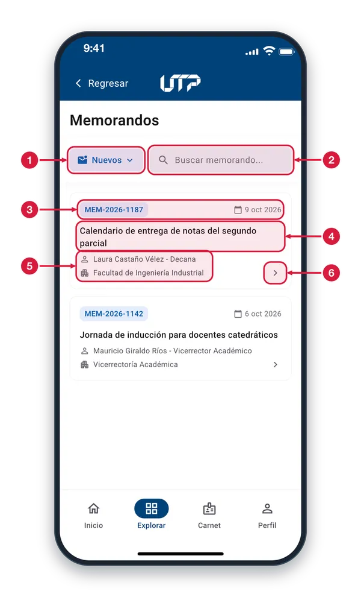
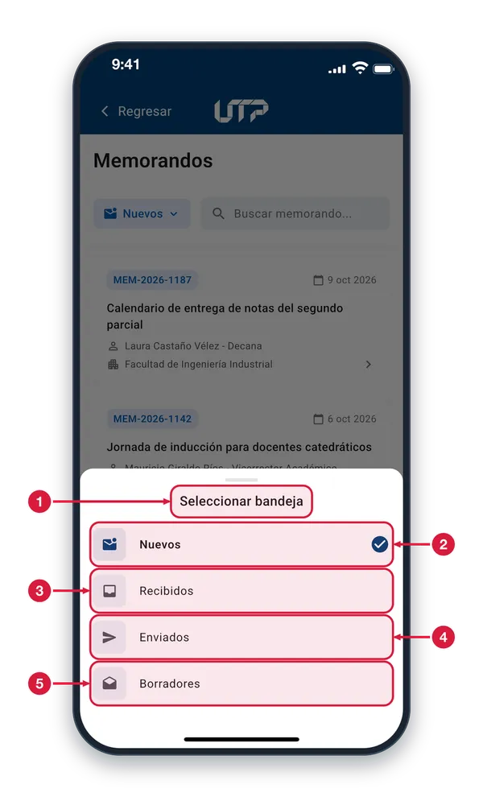
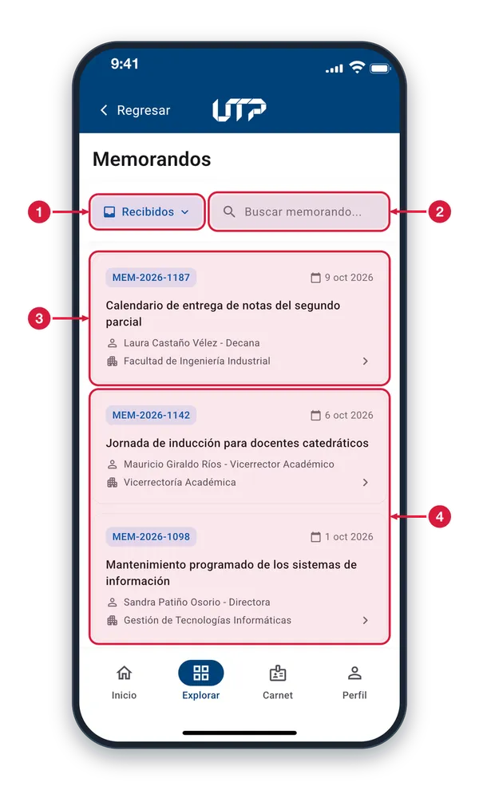
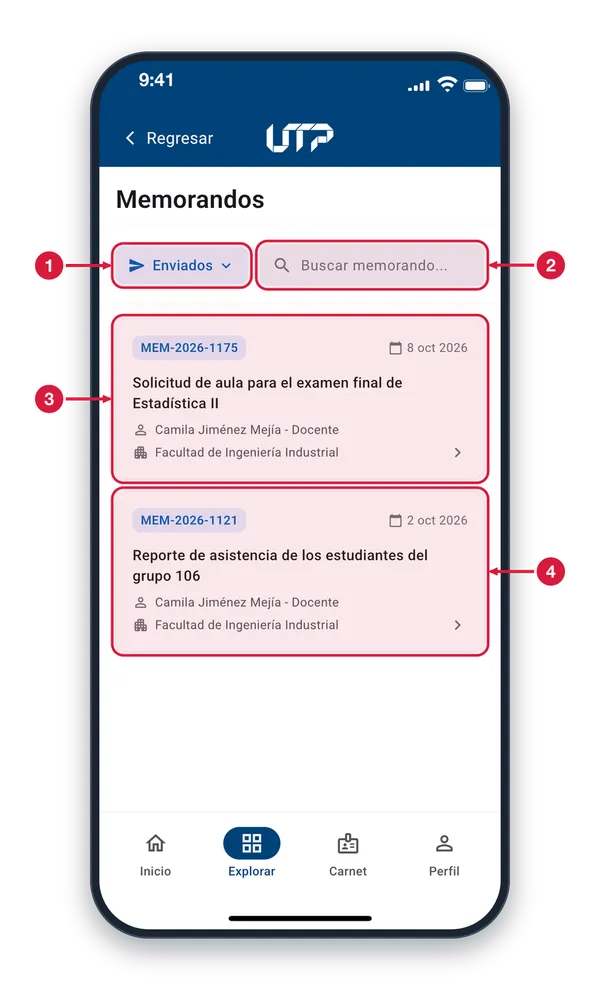
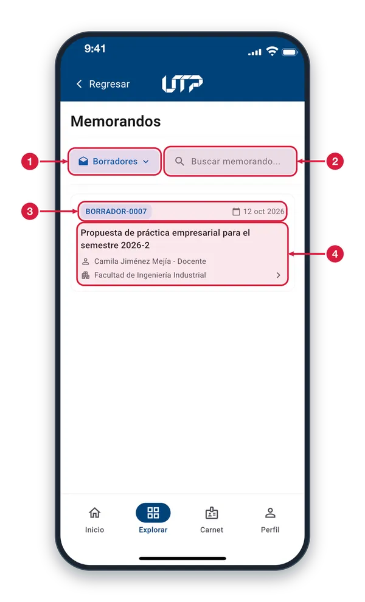
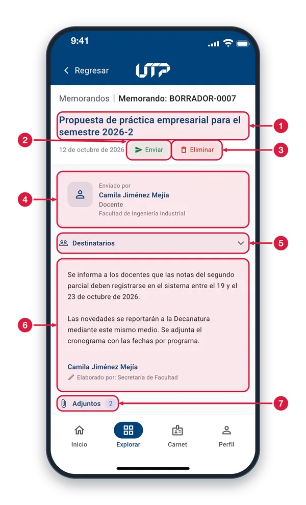
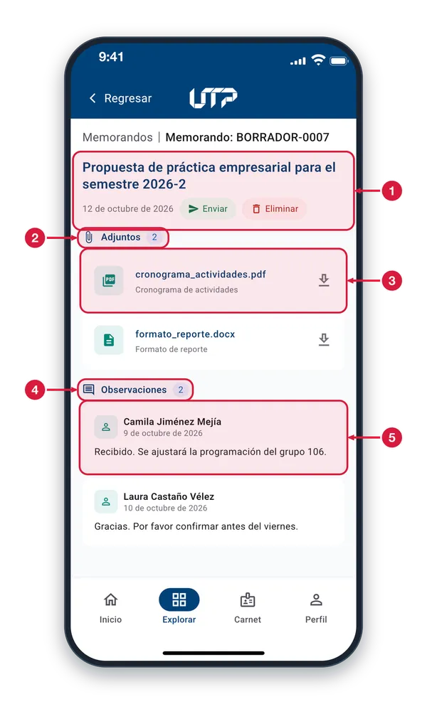
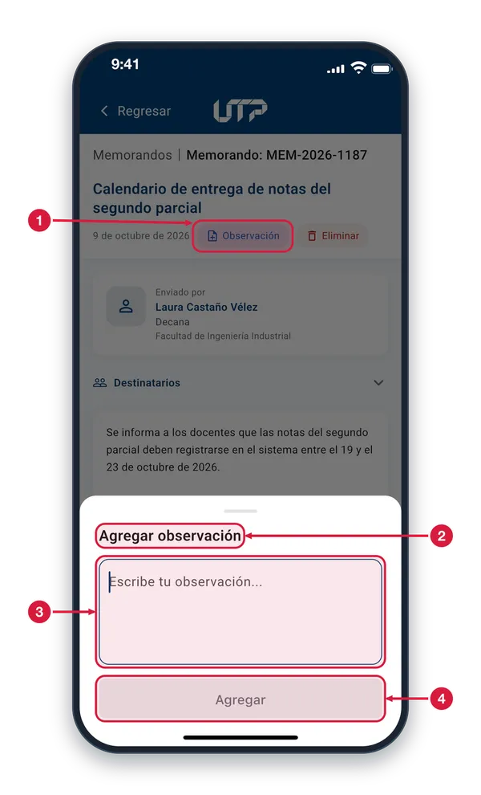

Tu buzón de comunicaciones institucionales interno. Consulta memorandos recibidos, enviados, borradores y nuevos; busca por texto y filtra por dependencia o fechas.
El módulo de Memorandos cuenta con:
Cuatro bandejas: Nuevos, Recibidos, Enviados, Borradores
Búsqueda por texto con filtros por dependencia y fechas
Detalle completo: remitente, destinatarios y cuerpo del memo
Archivos adjuntos descargables (PDF, Word, Excel, imágenes)
Observaciones y acciones: enviar, responder, eliminar
Solo podrás ver y hacer uso del módulo MEMORANDOS cuando te loguees en la aplicación
MEMORANDOS · BANDEJAS
Bandeja de memorandos1 de 5
Aquí lees los memorandos que te llegan. Entra desde Explorar, en Gestión administrativa; se abre en la bandeja Nuevos.

Selector de bandeja Muestra la bandeja en que estás (aquí, Nuevos). Tócalo para cambiar entre Nuevos, Recibidos, Enviados y Borradores.
Buscar memorando Escribe el código, el asunto, el nombre del firmante o la dependencia para filtrar la bandeja. Al tocar el campo aparecen los filtros Dependencia y Fecha.
Código y fecha A la izquierda va el código del memorando y a la derecha la fecha en que fue aprobado.
Asunto El tema del memorando. Si es muy largo, se corta con puntos suspensivos; ábrelo para leerlo completo.
Firmante y dependencia Quién firma el memorando con su cargo y, debajo, la dependencia que lo emite.
Abrir el memorando Toca la tarjeta, en cualquier parte, para abrir su detalle. En Nuevos, al abrirlo deja de contarse como nuevo. Las demás tarjetas funcionan igual.
Seleccionar bandeja2 de 5
Toca el selector de bandeja, arriba junto al buscador, para abrir esta hoja y elegir qué memorandos ver.

Hoja de bandejas Elige una bandeja: la hoja se cierra y se carga su lista. Para salir sin cambiar nada, toca fuera de la hoja.
Nuevos Los memorandos que aún no has abierto. La palomita azul marca la bandeja en la que estás.
Recibidos Los memorandos que te han enviado.
Enviados Los memorandos que tú enviaste a otras personas o dependencias.
Borradores Los memorandos que dejaste sin enviar. Al abrir uno puedes enviarlo o eliminarlo.
Bandeja Recibidos3 de 5
Aquí ves los memorandos que te han enviado. Llegas con el selector de bandeja, arriba a la izquierda.

Bandeja Recibidos Indica que estás en Recibidos. Tócalo para pasar a otra bandeja.
Buscar memorando Filtra los recibidos por código, asunto, firmante o dependencia. Al tocar el campo aparecen los filtros Dependencia y Fecha.
Tarjeta de memorando Resume el código, la fecha, el asunto, quién firma y su dependencia. Tócala para abrir el detalle, donde puedes agregar una observación o eliminar el memorando.
Más memorandos Desliza hacia arriba para ver los demás memorandos y hacia abajo, desde el inicio de la lista, para actualizarla. Todas las tarjetas funcionan igual.
Bandeja Enviados4 de 5
Aquí ves los memorandos que tú enviaste. Llegas con el selector de bandeja, arriba a la izquierda.

Bandeja Enviados Indica que estás en Enviados. Tócalo para pasar a otra bandeja.
Buscar memorando Filtra los enviados por código, asunto, firmante o dependencia. Al tocar el campo aparecen los filtros Dependencia y Fecha.
Tarjeta de memorando Cada tarjeta es un memorando que enviaste. Tócala para ver el detalle: destinatarios, texto, adjuntos y observaciones. Desde ahí también puedes agregar una observación o eliminarlo.
Más memorandos Si hay más tarjetas, desliza hacia arriba para verlas. Para actualizar la lista, desliza hacia abajo desde su inicio.
Bandeja Borradores5 de 5
Aquí están los memorandos que dejaste sin enviar. Llegas con el selector de bandeja, arriba a la izquierda.

Bandeja Borradores Indica que estás en Borradores. Tócalo para pasar a otra bandeja.
Buscar memorando Filtra los borradores por código, asunto, firmante o dependencia.
Código del borrador Los borradores llevan un código que empieza por «BORRADOR», distinto al de los memorandos ya enviados. A la derecha va la fecha.
Abrir el borrador Muestra el asunto, quién firma y la dependencia. Toca la tarjeta para abrir el borrador: desde su detalle puedes enviarlo o eliminarlo.
MEMORANDOS · DETALLE Y ACCIONES
Detalle de un borrador1 de 4
Se abre al tocar un borrador. Revisa el memorando completo y, desde la cabecera, envíalo o elimínalo.

Asunto y fecha El tema del memorando, en azul. Debajo, a la izquierda de los botones, va la fecha del memorando.
Enviar Solo aparece en los borradores. Toca para enviarlo: la app te pide confirmar y, al aceptar, avisa «Memorando enviado» y vuelves a la lista.
Eliminar Aparece en todas las bandejas. Pide confirmación porque no se puede deshacer; al aceptar, el memorando se elimina y vuelves a la lista.
Enviado por Quién firma el memorando: su nombre, su cargo y la dependencia desde la que lo emite.
Destinatarios Toca para desplegar la lista: «Para» son las personas o dependencias a las que va dirigido y «Copia», las que reciben copia. Tócalo otra vez para cerrarla.
Texto del memorando El cuerpo del memorando. Al final aparecen la firma y «Elaborado por», que indica quién lo redactó.
Adjuntos La insignia indica cuántos archivos trae el memorando. Desplázate hacia abajo para verlos y abrirlos.
Adjuntos y observaciones2 de 4
Desplázate hacia abajo en el detalle de un memorando para ver sus archivos adjuntos y las observaciones que tiene.

Cabecera fija El asunto, la fecha y las acciones se quedan arriba mientras te desplazas por el memorando.
Adjuntos La insignia indica cuántos archivos trae el memorando.
Archivo adjunto Muestra el nombre del archivo y su descripción. Tócalo y se abre en otra aplicación del teléfono; si no se puede abrir, la app te avisa. Los demás funcionan igual.
Observaciones La insignia indica cuántas observaciones tiene el memorando.
Observación Cada observación muestra quién la escribió, la fecha y su texto. Para agregar una, usa el botón «Observación» de la cabecera (no aparece en Borradores).
Detalle de un memorando3 de 4
Se abre al tocar un memorando de Nuevos, Recibidos o Enviados. Desde la cabecera agregas una observación o lo eliminas.
Asunto y fecha El tema del memorando, en azul. Debajo, a la izquierda de los botones, la fecha en que fue aprobado.
Observación No aparece en Borradores. Toca para escribir una observación; se guarda y queda en la lista de Observaciones del memorando.
Eliminar Pide confirmación porque no se puede deshacer; al aceptar, el memorando se elimina y vuelves a la lista.
Enviado por Quién firma el memorando: su nombre, su cargo y la dependencia desde la que lo emite.
Destinatarios Toca para desplegar «Para», las personas o dependencias a las que va dirigido, y «Copia», las que reciben copia. Tócalo otra vez para cerrarla.
Texto del memorando El cuerpo del memorando. Al final aparecen la firma y «Elaborado por», que indica quién lo redactó.
Adjuntos La insignia indica cuántos archivos trae. Desplázate hacia abajo para verlos y tocarlos: cada uno se abre en otra aplicación del teléfono.
Agregar observación4 de 4
Se abre al tocar «Observación» en el detalle de un memorando. Escribe tu comentario y agrégalo al memorando.

Botón Observación Este botón del detalle abre la hoja «Agregar observación».
Hoja Agregar observación Para cerrarla sin guardar nada, toca fuera de la hoja.
Campo de la observación Escribe aquí tu comentario; el teclado se abre solo. Después aparece en la lista de Observaciones del memorando.
Agregar Está gris mientras el campo esté vacío. Al escribir se activa; tócalo para guardar, cerrar la hoja y ver el aviso «Observación agregada».